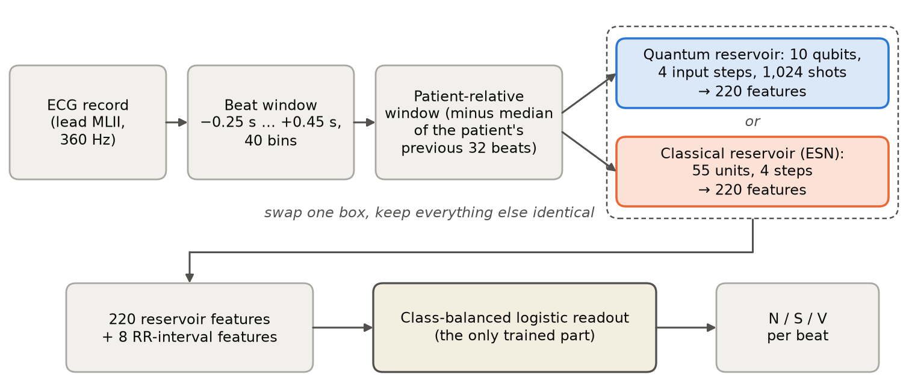
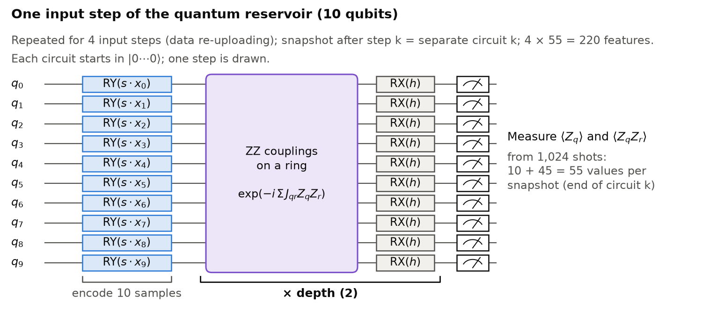
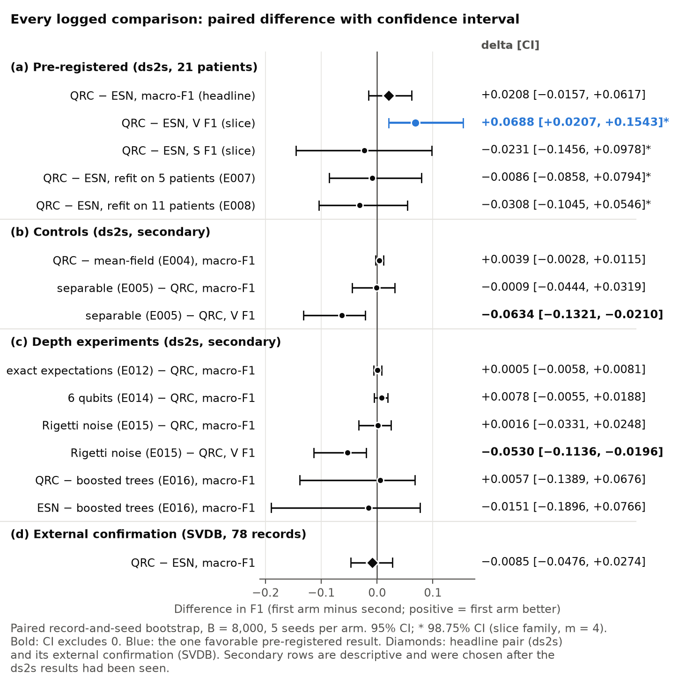
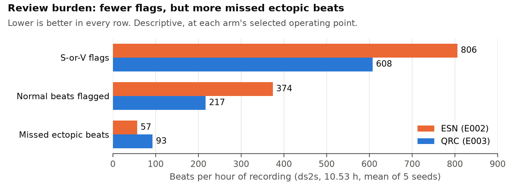
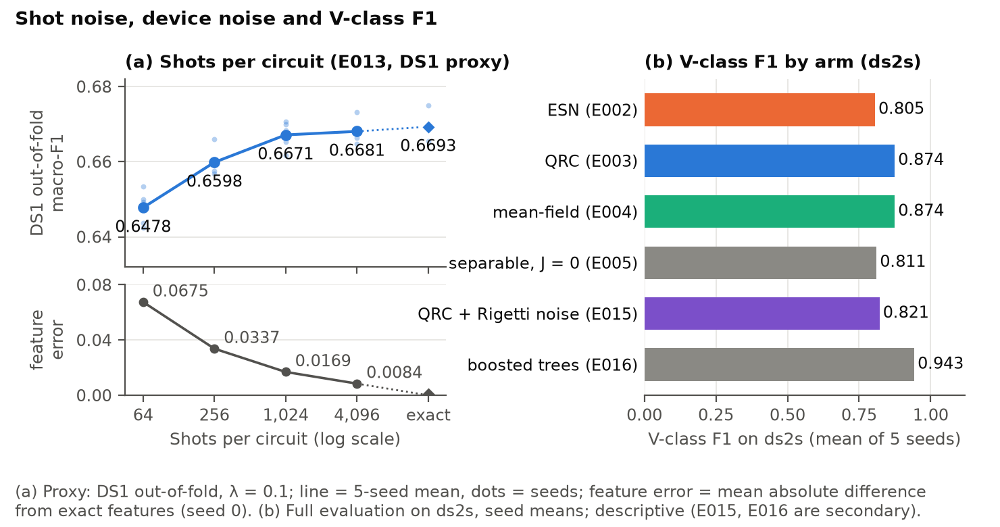
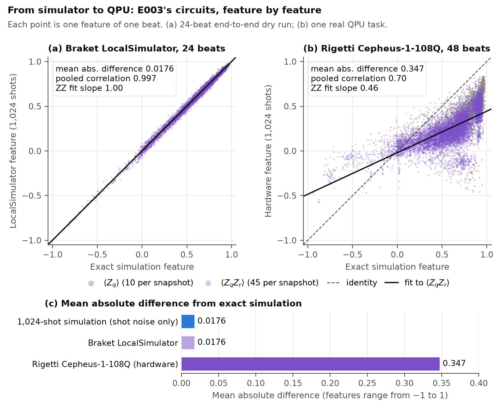

A matched, pre-registered test on patients the model has never seen, from GPU simulation to a real quantum processor
26–28 October 2026 · Code and evidence: github.com/joelynx/QML-Hackathon
The one-sentence version. We built the fairest comparison we could between a quantum and a classical reservoir for heartbeat classification, found a favorable ventricular-beat result against the matched classical model on the MIT-BIH test split. Then a classical mean-field model of the same circuit reproduced it, a second database did not confirm it, and on a real quantum processor the features differed strongly from simulation.
Only the first point is a priority claim, and only as far as our literature search reaches; the others are design contributions of this project.
A Holter monitor records a patient’s electrocardiogram (ECG) for a day or more, about 100,000 heartbeats per day. Nobody can read that by hand, so software labels every beat and a technician or cardiologist reviews the beats it flags. Two kinds of abnormal (ectopic) beat matter here:
Every other beat is normal (N) for our purposes. There are two costs. A missed ectopic beat can hide an arrhythmia; a false flag adds review work for a person.
Heartbeats differ a lot between people. A model trained on some patients and tested on beats of the same patients does very well, because it has effectively seen those hearts before. The realistic setting is different: the model is trained on other people and must work on a new patient with none of that patient’s labels. This is called the inter-patient setting, and performance drops sharply in it, especially for S beats. The reference inter-patient benchmark reports that only 38.5% of the beats it flagged as S really were S [3].
The prior evidence is sceptical. In a large benchmark of 12 quantum models on 160 datasets, out-of-the-box classical models won, and removing entanglement often did as well or better [2]. With matched size and tuning effort, the quantum reservoir advantages studied by Pandey disappear [10] (abstract read). A systematic review of quantum machine learning for digital health found that “performance differentials between quantum and classical algorithms show no consistent trend to support empirical quantum utility in digital health” [5]. So we designed a comparison strict enough to be believed whichever way it came out: a matched classical reservoir, a no-entanglement control, a stronger classical model and a locked second database.
A flaw in much published quantum ECG work. Many studies split beats at random into training and test sets, so beats from the same patient land on both sides. That measures recognition of hearts the model has already seen, not generalisation to a new patient. We split by patient throughout.
We use the MIT-BIH Arrhythmia Database [9], the standard benchmark, distributed by PhysioNet [11]: 48 half-hour, two-lead recordings from 47 people, every beat annotated by cardiologists. Beat labels are grouped into the standard AAMI classes, and the task uses N, S and V. Recordings with pacemakers are excluded, as is standard practice.
We use the standard de Chazal inter-patient split [3]: 22 training recordings (called DS1; 50,542 beats) and 22 test recordings (DS2). Then we made it stricter. Recordings 201 and 202 come from the same person, one in training and one in test (the database documentation says so). We removed record 202 from the test set. The resulting test split, ds2s, has 21 patients, 10.53 hours and 47,129 scored beats: 42,148 N, 1,781 S and 3,200 V.
A second database, the MIT-BIH Supraventricular Arrhythmia Database (SVDB; 78 half-hour records, 184,286 beats) [4], was locked away for a single, logged confirmation run at the end (Section ).
| Hackathon step | Our answer | Section |
|---|---|---|
| Define the healthcare problem | Flagging ectopic beats for patients never seen in training; MIT-BIH and SVDB | |
| Establish a strong classical baseline | A matched echo state network (credited to Jaeger [7]), plus a tuned gradient-boosting model for context | , |
| Develop the quantum contribution | A 10-qubit quantum reservoir: why it fits, how it works, how it behaves under noise and on hardware | , |
| Evaluate both approaches fairly | One shared pipeline, a pre-registered decision rule, logged test access, an external database | , |

Read it as six steps:
Why reservoirs? Neither reservoir is trained; a handful of its settings are chosen by search on the training patients, and only the final linear readout learns from them, so the models have few trainable parameters, which suits the hard part of the problem: generalising to new patients from 22 training recordings. And a quantum reservoir is the natural place to try a quantum computer: it needs no gradient-based training of the circuit, so it avoids the training difficulties of variational quantum models.
We use the lead called MLII, selected by name (one recording stores it in its second channel, which a channel-number rule would have missed), at its native 360 samples per second. For each annotated beat we take the signal from 0.25 s before to 0.45 s after the beat, average it into 40 bins, subtract its median and divide by its standard deviation. This per-beat normalisation removes the local offset and amplitude. No other filtering is applied.
The beat positions come from the database annotations. We do not build a beat detector; this is a deliberate scope limit (Section ).
Early on (experiment E001, on the training patients only) we saw something surprising: adding the raw beat shape to the rhythm features made the classifier worse on held-out patients (macro-F1 from 0.637 with rhythm alone to 0.546). The raw shape of a heartbeat is very personal, and a shape learned on one person does not transfer to another.
What does transfer is how a beat differs from that same patient’s normal beats. So the reservoir input is the window minus the element-wise median of the same patient’s previous 32 windows. It uses only the past and needs no labels, so it is legitimate for a new patient. On the training patients this recovered most of the lost accuracy (to about 0.62–0.63; anomaly A009), and we fixed it as the shared input for both reservoirs before any tuning.
Key idea. The reservoirs do not see “what a heartbeat looks like”; they see “how this heartbeat deviates from this patient’s usual heartbeat”. That single change is what makes morphology useful across patients.
Ectopic beats usually come early. Eight timing features are appended in every model: the interval to the previous beat (pre-RR), to the next beat (post-RR), the 10-beat average interval, the log-ratios pre/average, post/average, pre/post and short-term/long-term average, and the beat’s amplitude relative to the previous 32 beats. Using the next beat means the classifier waits up to one beat before deciding, so it suits offline Holter analysis rather than instant alarms.
Drop a stone into a pond and watch the ripples. The pattern of ripples a moment later depends, in a complicated nonlinear way, on where and how the stone fell. If you can photograph the ripples, a very simple rule applied to the photograph may tell you which stone was thrown, even though the rule itself knows nothing about water.
That is a reservoir: a fixed, rich dynamical system (the pond) that turns an input into a complicated pattern, plus a simple trained readout (the rule) that reads the pattern. Only the readout learns. The pond is chosen once, through a handful of settings such as how strongly its parts interact, and then left alone.
For this project the “stone” is the 40-number patient-relative beat, fed in 4 steps. The “photographs” are taken after each step, 55 numbers each. We compare two ponds: a classical one made of simulated neurons and a quantum one made of qubits.
An echo state network [7] is a fixed, randomly connected recurrent network of artificial neurons. At each input step its state vector is updated as
where is the input step, a sparse random matrix scaled to spectral radius , the leak (how much of the old state is kept) and the input scale. It is the natural classical counterpart of a quantum reservoir: both are fixed dynamical systems, and in both only the readout is trained.
Tuning. Thirty configurations were drawn at random from a declared search space (size, spectral radius, leak, input scale, density, bias) and each was scored by 5-fold cross-validation by patient on the training recordings only. The selected network (E002) has 55 neurons, spectral radius 0.68, leak 0.10, input scale 0.98, density 0.054 and bias 0.54; its 55 neuron values after each of the 4 steps give 220 features.
Performance on the 21 test patients (5 seeds): macro-F1 0.7065. Per class (sensitivity / positive predictivity / F1): N 0.907 / 0.985 / 0.944; S 0.595 / 0.269 / 0.370; V 0.953 / 0.697 / 0.805.
Is the baseline handicapped? Its selected regularisation sat at the edge of the search grid, which can mean the grid was too narrow. We extended the grid; the same configuration was selected and the predictions were byte-identical (E010). An independent reviewer agent rebuilt this baseline and reproduced all five test prediction files byte for byte (V004).

Ten qubits start in the state . For each of the 4 input steps:
On hardware, “measure after step ” means a separate circuit containing steps 1 to , so each beat needs 4 circuits of 10 qubits.
We wrote a GPU statevector simulator in PyTorch. Ten qubits need 210 = 1,024 complex amplitudes, small enough to simulate exactly for every beat. The simulator matches an independent dense-matrix implementation to 4×10−7 (E001).
Shots are sampled, not skipped: finite-shot noise is part of the headline model. Each beat draws its shots from its own counter-based random stream in double precision, so a beat’s features do not depend on which other beats were simulated with it. Together with double-precision arithmetic in the classical network and the readout (anomaly A011), this is what makes every headline prediction file reproducible byte for byte.
The quantum reservoir got exactly the same tuning procedure and budget as the classical one: 30 random configurations of input scale, coupling , field , depth, ring or chain, and disorder, scored on the training patients only. The winner (E003) has input scale 0.317, = 0.106, = 0.159, depth 2, a ring, and disorder 0.42.
A clue we noticed at once. The selected couplings are weak ( = 0.106, near the bottom of the search range 0.1–1.5). Weak couplings keep the ten qubits close to a product state, where each qubit can be described on its own. That made a classical “no-entanglement” version of the same circuit an especially telling control (Section ).
Both arms end in the same readout: the 220 reservoir features and the 8 rhythm features are standardised and fed to a class-balanced multinomial logistic regression with an L2 penalty. “Class-balanced” means S and V beats are up-weighted so that the rare classes are not ignored. The penalty strength is chosen from {0.001, 0.01, 0.1, 1} on the training patients, and the predicted class is the most probable one.
The matching rules were declared before tuning: the same pipeline, readout and readout grid; the same tuning budget (30 configurations per arm, the same random-search procedure and seed scheme); and the headline pair named before the run.
For each class we ask two questions. Sensitivity: of the beats that really are of this class, what fraction did we find? Positive predictivity (precision): of the beats we labelled as this class, what fraction really are? The F1 score combines them (their harmonic mean), so it is high only when both are high. Macro-F1 is the plain average of the N, S and V F1 scores.
Averaging over classes matters because 89% of test beats are normal. A model that calls every beat normal gets N F1 0.944 but S and V F1 of zero, so its macro-F1 is only 0.315. Macro-F1 cannot be gamed by ignoring the rare, clinically important classes.
Beats from the same patient are alike, so 47,129 beats are not 47,129 independent pieces of evidence; there are really only 21 patients. We therefore estimate uncertainty by resampling patients: draw 21 records with replacement, for both models together, resample the 5 seeds within each model, recompute the difference in macro-F1, and repeat 8,000 times. The middle 95% of those differences is the confidence interval. This is a paired two-level bootstrap.
The decision rule, the slice family and the access rules were fixed in the evaluation specification (EVAL.md) before tuning began, and a human approved it before any model was scored on the test patients:
Enforced by code, not by good intentions. The evaluation command refuses to score a second, different headline, refuses if another model was scored first, logs every access with file hashes, and runs the external database through a placeholder-label dry run before the real access is logged. It has 43 automated tests.
Two reviewer agents, each starting in a fresh context with no memory of the work, checked the project. V004 rebuilt the classical baseline and reproduced all its prediction files byte for byte. V005 checked the external confirmation, the depth experiments and every claim in the write-up: it first failed one inaccurate statement and two overstatements, then found one wrong number and three wording items on re-check; all were corrected and the final claim set passed. From a clean environment and a fresh download of the data, V005 rebuilt all 10 headline prediction files and the headline table byte for byte in 27.3 minutes.
| Comparison | Quantum | Classical | Difference [interval] | Outcome |
|---|---|---|---|---|
| Headline: macro-F1 | 0.7273 | 0.7065 | +0.0208 [−0.0157, +0.0617] | no detectable change |
| Slice: V-class F1 | 0.874 | 0.805 | +0.0688 [+0.0207, +0.1543] | favorable |
| Slice: S-class F1 | 0.347 | 0.370 | −0.0231 [−0.1456, +0.0978] | no detectable change |
| Slice: readouts refit on 5 patients | 0.6898 | 0.6984 | −0.0086 [−0.0858, +0.0794] | no detectable change |
| Slice: readouts refit on 11 patients | 0.6944 | 0.7253 | −0.0308 [−0.1045, +0.0546] | no detectable change |
Headline interval 95%; slice intervals 98.75%. Seed means over 5 seeds. Experiments E003 vs E002, E007, E008.
The overall difference is +0.021 in favour of the quantum reservoir, but its interval includes zero, so under our own rule the headline is inconclusive. One of the four sub-questions is favorable: ventricular beats.
The quantum arm’s ventricular true positives are almost unchanged (3,036 vs 3,050 per seed), but its false ventricular alarms fall from 1,324 to 709 per seed, mostly on normal beats of patients with few or no V beats (records 117, 222, 105, 111 and 212) and on S beats of record 232. V positive predictivity rises from 0.697 to 0.811 at nearly the same V sensitivity (0.953 vs 0.949). Per patient, among the 9 records with at least 10 V beats, the quantum arm has the higher V F1 in 5.

Record 232 holds 1,381 of the 1,781 S beats in the test split (77.5%), so S metrics on this split largely measure one patient. The quantum arm finds 310 fewer S beats per seed than the classical one, 288 of them in record 232. Leaving out any one record keeps the headline difference positive (from +0.011 without record 213 to +0.046 without 232), but that does not change the pre-registered interval.

| Per hour of recording | Classical (E002) | Quantum (E003) | Difference |
|---|---|---|---|
| S-or-V flags | 806 | 608 | −198 |
| Normal beats flagged | 374 | 217 | −157 |
| Missed ectopic beats | 57 | 93 | +36 (+63%) |
| S sensitivity | 59.5% | 42.1% | −17.4 points |
| V sensitivity | 95.3% | 94.9% | −0.4 points |
Fewer flags at this operating point come with more missed ectopic beats. We did not measure review time and did not set an operating point for a clinical target, so this describes a trade-off; it does not show a workflow benefit.
Picture each qubit as an arrow pointing somewhere on a sphere (its Bloch vector). In the full quantum simulation the ten arrows can become entangled: the state of the whole can no longer be described arrow by arrow, which is why it needs 1,024 complex numbers. The mean-field model forbids that. Every qubit stays its own arrow, and each ZZ coupling simply turns a qubit’s arrow by an amount set by its neighbours’ average . Pair averages become products of single-qubit averages, and the same 1,024-shot sampling is applied. A classical computer evaluates it in time that grows only linearly with the number of qubits. This control comes from the quantum reservoir literature [8].
If the quantum arm’s advantage needed entanglement, the mean-field model should lose it. It does not:
| Control (same selected settings, no tuning of its own) | Macro-F1 | Difference [95% interval] | V-class F1 |
|---|---|---|---|
| Quantum (E003) vs mean-field model of the same circuit (E004) | 0.7273 vs 0.7234 | +0.0039 [−0.0028, +0.0115] | both round to 0.874; −0.0001 [−0.0155, +0.0166] |
| Circuit without couplings, = 0 (E005) vs quantum | 0.7264 vs 0.7273 | −0.0009 [−0.0444, +0.0319] | −0.0634 [−0.1321, −0.0210] |
| Rhythm features only (E006) | 0.6997 | one deterministic run | 0.739 |
So: removing entanglement (mean-field) changes nothing we can detect; removing the couplings altogether costs ventricular F1 (while raising S F1); and the 8 rhythm features alone already reach 0.700, close to the classical reservoir’s 0.707. The couplings matter, and a classical spin model of them reproduces their effect; this benchmark detected no added contribution from entanglement. Because an interval that includes zero does not prove equality, our claim is precise: this benchmark detected no added benefit of the full quantum model over the mean-field model.
The matched echo state network is a controlled comparator, not necessarily the strongest classical model. After the test results were in, we tuned gradient-boosted trees on the same inputs (E016; declared as a post-hoc, secondary comparison). Overall they tie both reservoirs, but only because they rarely predict S and so lose the S beats of record 232. Their ventricular F1 is 0.943, above both the quantum arm (0.874; −0.068 [−0.159, −0.031]) and the classical reservoir, and without record 232 they lead the quantum arm by 0.087 overall.
We compared the feature maps directly on the training patients, without any test labels (E017). Linear CKA measures whether two sets of features are the same representation up to rotation and scaling (1 = identical). Quantum vs mean-field: 0.986. Quantum vs a rerun of itself with new shots: 0.992; with another reservoir seed: 0.989. Quantum vs the classical reservoir: 0.525. In other words, the mean-field map is about as close to the quantum map as the quantum map is to itself. The geometric difference of Huang et al. [6], a measure of how much room a quantum kernel has to beat a classical one, tells the same story: the mean-field map sits at the same scale as a shot-noise rerun of the quantum map itself (9.6 vs 10.5 at the smallest regulariser), against 35 for the classical reservoir (descriptive values).

These were declared in writing before they ran and reuse the selected quantum configuration. Every test-split comparison here is secondary and descriptive, and all were chosen after the headline results had been seen.
With exact expectation values instead of 1,024 shots (E012), the test-split difference is +0.0005 [−0.0058, +0.0081]: shot noise at 1,024 shots has no measurable effect. On the training patients (E013), performance is flat from 1,024 shots upward and lower at 64 (0.648 vs 0.667), and the feature error halves with every fourfold increase in shots, as the 1/√shots law predicts.
On the training patients (E014), 6 qubits scored 0.680, 8 qubits 0.667 and 12 qubits 0.6635, against 0.667 for 10; dropping all pair correlators (keeping only ) scored 0.678. On the test split, 6 qubits vs 10 is +0.0078 [−0.0055, +0.0188]. More qubits did not help, and the pair correlators added little, consistent with the mean-field finding. (Changing the qubit count also changes the input resolution, so the two are confounded.)
We simulated the circuit with realistic errors (E015): depolarising noise after every gate and readout errors on every measured bit, at the rates Amazon Braket reports for two real processors (Section ), with the readout retrained on noisy features. We predicted that noise would push the model towards the no-coupling control. That prediction failed: on the training patients, the noisy ventricular F1 (0.699 at Rigetti’s rates, 0.717 at IQM’s) fell below both the noiseless circuit (0.742) and the no-coupling control (0.756). On the test split, at Rigetti’s rates, ventricular F1 fell from 0.874 to 0.821. Most of the favorable V-slice margin does not survive device noise in simulation, and the simulation omits idle decay, crosstalk and qubit routing, so real hardware should be worse.
A quantum model that only exists in simulation leaves the obvious question open: what happens on a real device? We used Amazon Braket at four levels, each one checked before the next, so that the single paid task was as unlikely as possible to fail for a reason we could have caught for free.
Braket returns each device’s current calibration. Fetched on 28 October 2026, the chip-wide medians were: Rigetti Cepheus-1-108Q, single-qubit error 0.0030, two-qubit (CZ) error 0.0117, readout error 0.031; IQM Garnet, 0.0006, 0.0045, and 0.010 / 0.027. These numbers set the error rates of the Pauli-trajectory noise simulation of Section , run on all training beats for both devices and on the test beats for Rigetti.
Real devices run only their own native gates on specific physical qubits. We compiled the snapshot circuits into each device’s native gates on pinned physical qubits (verbatim programs of up to 160 CZ gates and 995 single-qubit gates per beat snapshot on one 10-qubit ring; a packed hardware circuit carries up to five such rings) and ran them on the Braket LocalSimulator:
The submission script enforces a device allowlist (Rigetti Cepheus-1-108Q and IQM Garnet only), a 1,024-shot cap, an approval file, written after the human approves, naming the device, the number of tasks and the cap, and a cost ledger that writes each estimate before submission and refuses any task whose estimated cumulative cost would exceed the approved cap. The estimates use the published prices; the actual bill is to be checked in AWS Billing. Our first submission was refused by AWS before any task was created, because the account lacked Braket’s service-linked role; nothing was charged. The role was created with the human team member’s approval and the same job was resubmitted.
Each beat needs 4 circuits of 10 qubits, but Rigetti Cepheus-1-108Q had 107 qubits available when we fetched its description. Beat packing places five beats side by side on disjoint 10-qubit rings, so 48 beats × 4 snapshots needed 40 circuits instead of 192. One program-set task ran 40 circuits × 1,024 shots at an estimated USD 17.71 (USD 0.30 per task plus USD 0.000425 per shot), within the USD 35 cap. All 48 beats completed. The beats were drawn without looking at their labels, 16 per class predicted by the simulation.

| Features compared with the exact simulation | Mean absolute difference | Correlation |
|---|---|---|
| 1,024-shot simulation (shot noise only) | 0.018 | – |
| Braket LocalSimulator, 24 beats | 0.018 | 0.997 |
| Rigetti Cepheus-1-108Q, 48 beats | 0.347 | 0.70 |
On hardware the pair correlators are contracted towards zero (regression slope 0.46), as the noise simulation predicted. The readout trained on noiseless simulated features gives the same class as the simulation for only 41.7% of beats, against 33.3% expected by chance and an 87.5% ceiling set by shot noise alone, and its predictions skew to S (35 of 48), the same failure the noise simulation showed.
What the hardware run tells us. The circuit runs on a current quantum processor, but its features are not the simulated ones. A hardware deployment would need a readout trained on hardware features, plus error mitigation. This is a 48-beat, label-free diagnostic from one task under one calibration state; we claim no hardware accuracy.
As prospective arithmetic only (nothing measured): 4 circuits × 1,024 shots is 4,096 shots per beat. One Holter day of about 100,000 beats would need about 410 million shots, about USD 174,000 at Rigetti’s on-demand shot price of USD 0.000425 [1] (without beat packing, which could cut the shot count up to fivefold; task fees excluded). A 10-qubit state has only 1,024 amplitudes, so this study makes no claim of computational advantage.
The last test was decided on 26 October and run once on 28 October: take the exact frozen models (both arms, 5 seeds each, trained on the MIT-BIH training patients) and score them on SVDB, a database chosen by PhysioNet “to supplement the examples of supraventricular arrhythmias” in MIT-BIH. Its S beats are spread over 73 of its 78 records, so it tests the S class far better than our test split. The pre-registered criterion: confirmed only if the macro-F1 difference is positive and its 95% interval excludes zero.
Before the access, a predict-only path loaded the 10 saved models without modifying them and reproduced all 10 logged test-split prediction hashes, proving it used the same models (E018).
| SVDB (78 records, 184,286 beats, 39 h) | Quantum | Classical | Difference [95% interval] |
|---|---|---|---|
| Macro-F1 | 0.6402 | 0.6488 | −0.0085 [−0.0476, +0.0274] |
| N F1 | 0.938 | 0.935 | +0.004 [−0.006, +0.014] |
| S F1 | 0.412 | 0.438 | −0.026 [−0.078, +0.024] |
| V F1 | 0.570 | 0.574 | −0.003 [−0.089, +0.073] |
| S-or-V flags per hour | 801 | 870 | descriptive |
| Missed ectopic beats per hour | 133 | 111 | descriptive |
Outcome: not confirmed. The difference is negative whichever record is left out. The quantum arm keeps the same direction of trade-off as before (fewer flags, more misses), but the ventricular F1 gain does not reappear. The SVDB interval for V F1 is wide enough that it neither confirms nor excludes a gain of the size seen on the test split.
To make the pipeline concrete, here is what happens to a single beat of a test patient in the quantum arm.
A competition project lives or dies by small details. These are the ones that mattered, in order.
Everything runs from the public repository with Python 3.12 (tested on Windows 11; one CUDA GPU recommended). Raw data is downloaded from PhysioNet’s open-data mirror and every file is checked against PhysioNet’s published SHA-256 sums.
python -m venv .venv
.venv/Scripts/python -m pip install -r requirements-lock.txt
.venv/Scripts/python -m pip install -e .
.venv/Scripts/python scripts/reproduce.py --check # regenerate the 10 headline prediction
# files and compare with the logged hashes
The audit mode regenerates the headline without any new test-split access. Our own run took 26 minutes and matched byte for byte; the reviewer’s clean-environment run with a fresh download took 27.3 minutes. Every number in this document maps to an experiment card and an artifact through docs/EVIDENCE.md.
[1] Amazon Web Services. Amazon Braket pricing. https://aws.amazon.com/braket/pricing/ (accessed 28 October 2026).
[2] J. Bowles, S. Ahmed and M. Schuld. Better than classical? The subtle art of benchmarking quantum machine learning models. arXiv:2403.07059, 2024.
[3] P. de Chazal, M. O’Dwyer and R. B. Reilly. Automatic classification of heartbeats using ECG morphology and heartbeat interval features. IEEE Transactions on Biomedical Engineering, 2004. doi:10.1109/tbme.2004.827359
[4] S. D. Greenwald. Improved detection and classification of arrhythmias in noise-corrupted electrocardiograms using contextual information. Ph.D. thesis, Harvard-MIT Division of Health Sciences and Technology, 1990. (MIT-BIH Supraventricular Arrhythmia Database, PhysioNet, doi:10.13026/C2V30W.)
[5] R. S. Gupta, C. E. Wood, T. Engstrom, J. D. Pole and S. Shrapnel. A systematic review of quantum machine learning for digital health. npj Digital Medicine, 2025. doi:10.1038/s41746-025-01597-z
[6] H.-Y. Huang, M. Broughton, M. Mohseni, R. Babbush, S. Boixo, H. Neven and J. R. McClean. Power of data in quantum machine learning. Nature Communications, 2021. doi:10.1038/s41467-021-22539-9
[7] H. Jaeger. The “echo state” approach to analysing and training recurrent neural networks. GMD technical report, 2001.
[8] M. Kornjača et al. Large-scale quantum reservoir learning with an analog quantum computer. arXiv:2407.02553, 2024.
[9] G. B. Moody and R. G. Mark. The impact of the MIT-BIH Arrhythmia Database. IEEE Engineering in Medicine and Biology 20(3):45–50, 2001. (MIT-BIH Arrhythmia Database, PhysioNet, doi:10.13026/C2F305.)
[10] T. Pandey. When classical baselines are tuned as carefully as the quantum model, does quantum reservoir computing still win? arXiv:2607.09905, 2026. (Abstract read; full text not accessed.)
[11] T. Pollard, B. E. Moody, L. Lehman, B. Gow, C. Fernandes, C. Xie, A. Johnson, R. G. Mark and T. Heldt. PhysioNet as a global platform for biomedical research. Nature Health, 2026. doi:10.1038/s44360-026-00096-z